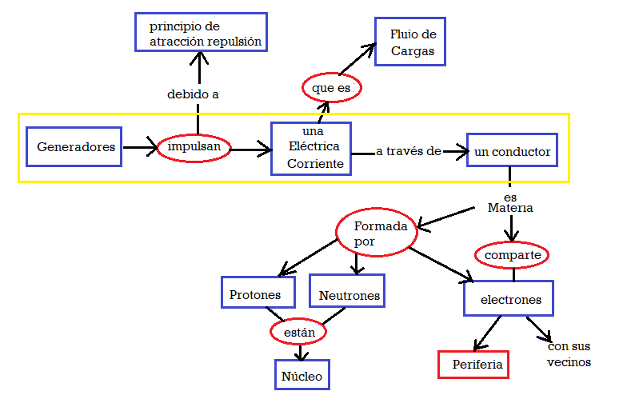

Uno de los tantos mapas conceptuales que se podrían hacer de lo visto hasta ahora
Generadores:
Sin importar el orígen o la causa, llamaremos generadores a aquellos dispositivos que impulsan una corriente eléctrica a través de un conductor o semiconductor.
Algunos tipos de generadores
Características:
Tienen dos terminales:
Terminal Positivo
Terminal Negativo
Su parámetro característico se denomina "Tensión" y se mide en una unidad llamala "Volt".
Símbolo de generadores en circuitos eléctricos
Imágen de un tipo de generador
Símbolo de todos los generadores
Unida de Medida, Múltiplos y Submúltiplos
La unidad de medida se llama Volt o Voltio.
Los submúltiplos son el miliVolt, y el microvolt:
miliVolt que es la milésima parte de un volt
1 miliVolt (mV)= 0,001 Volt (V)
microVolt que es la millonésima parte de un volt
1 uV = 0,000001 Volt
Los múltiplos son el KiloVolt y el MegaVolt:
1 Kilovolt (Kv) equivale a 1.000 volts
1 Megavolt (Mv) equivale a 1.000.000 volts
Tabla de conversión:
Aunque la reducción de unidades se puede resolver por regla de tres simple, la tabla que se presenta puede simplificar el cálculo.
Mv
Kilovolt (Kv)
Volt (v)
miliVolt (mV)
Instrucciones de uso:
Coloque el valor a convertir en la ventana de la unidad de orígen.
Desplace la coma de a tres lugares para llegar a la unidad de destino.
Complete con ceros hasta la nueva posición de la coma cuando sea necesario.
Lea el valor en la unidad de destino.
nota: Debe completar con un cero a la izquierda de la coma cuando haga falta.
Ejemplo:
Convertir 0,025 Volt en miliVolts.
0,
0
2
5
Mv
Kilovolt (Kv)
Volt (v)
miliVolt (mV)
Lugo de correr la coma tres lugares a la derecha, pues la unidad de destino es mV, podemos concluír que la respuesta será 25 mV.
Uso del multímetro:
El multímetro o tester es un instrumento que nos permite medir el parámetro característico de los generadores, la tensión.
En la figura se indica el sector de la llave selectora que permite medir tensiónes en milivolts/volts/kiloVolts.
Sector de la escala para medir tensión contínua en volts
Símbolo universal de tensión contínua
Práctica
Identificar generadores.
Identificar Símbolo de generadores.
Realizar conversión de unidades.
Medición de tensión de generadores utilizando el multímetro.
Evaluación
Aunque la evaluación es contínua, este tema tendrá una instancia de evaluación escrita.
Cuestionario de la Evaluación
¿A qué dispositivos llamaremos generadores?
¿Cuántos terminales tiene un generador?
¿Cómo se llaman los terminales de un generador?
¿Cuál es el parámetro característico de un generador?
¿En que unidad se mide el parámetro característico de un generador?
Ejercicio de conversión de unidades. Ejemplo: Convertir 5340 volt en Kilovolts.
¿Cuál es el símbolo universal de "Tensión Contínua?